梅吉、トンネルに入り浸る [梅吉]
某サイトのポイントの有効期限が迫っていたのでキャットトンネルを買いました。
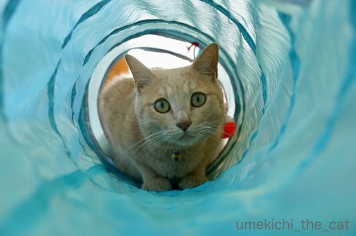
開封して広げた途端にズバン！と飛び込むカフェオレ色。
梅吉さんの辞書には『警戒』とか『躊躇』という文字は無いのですねー。
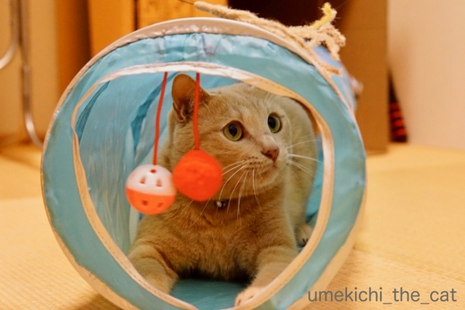
トンネルにくっ付いているおもちゃには興味を示さないので
シャカシャカする生地越しにじゃらしを動かすと
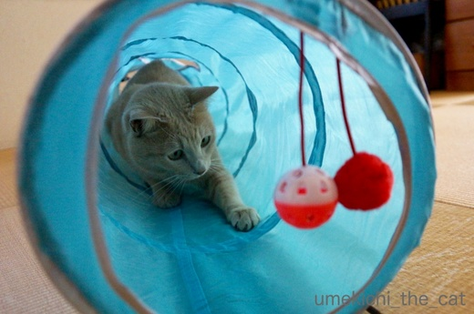
大喜びＯ(≧▽≦)Ｏ
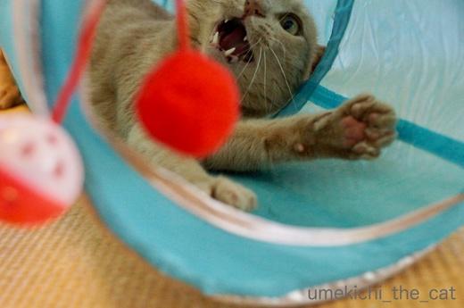
盛り上がり過ぎ(*>艸<)
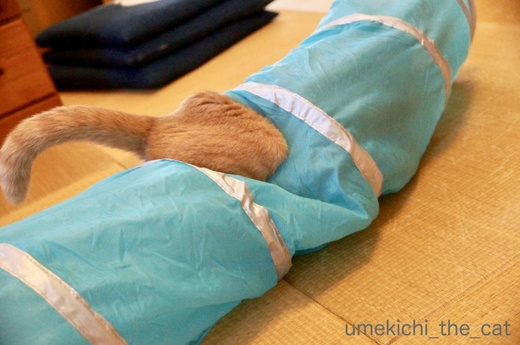
トンネルの横穴も
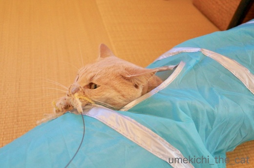
めっちゃウケてますw
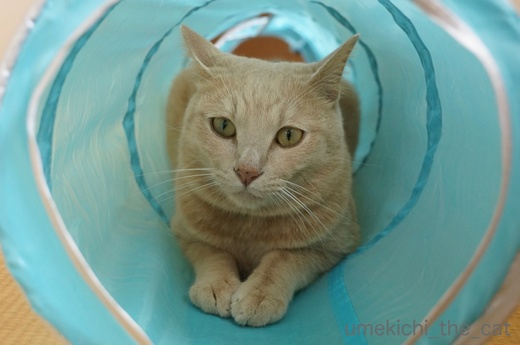
遊び疲れたらトンネルの中でまったり。
ティピーにしようか迷ったのですがやんちゃな梅吉にはトンネルだわ！
との読みが大的中でした＾＾
買ってから10日くらい経つのですが毎日ハードに使っているので
シャカシャカする薄い生地は爪痕でボツボツ穴が空いております。
破れるのも時間の問題かもしれませんwww
貯まったポイントはつい梅吉のグッズを買ってしまいます。
必要な日用品はいくらでもあるのに、なぜだー！
みなさんはポイントはどう利用していますか？
お花の写真が溜まっちゃいました！
季節感がなくなる前に大放出しますね。
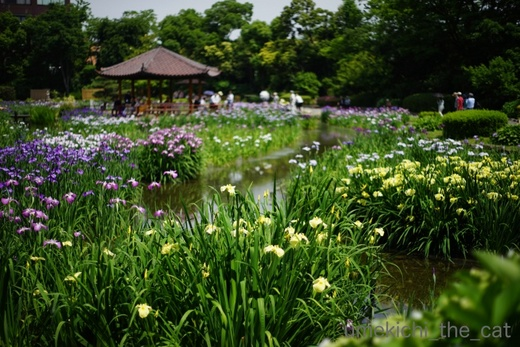
先週末見に行った花菖蒲。江戸系、伊勢系、肥後系がありました。
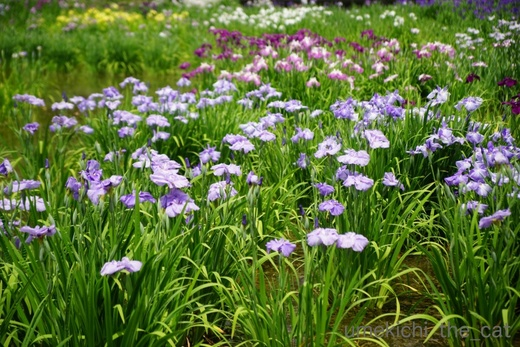
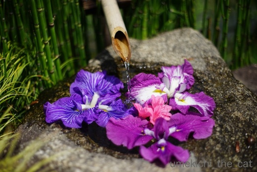
心憎い演出があったり＾＾
私たちが訪れた１週間後に「花菖蒲まつり」があったようですが
見頃は過ぎていたんじゃないのかなぁ。
今年はお花を楽しむ「◯◯まつり」残念な思いをされた方も多かったのでは無いでしょうか。。。
続いて週末は紫陽花を見にいきましたよ。
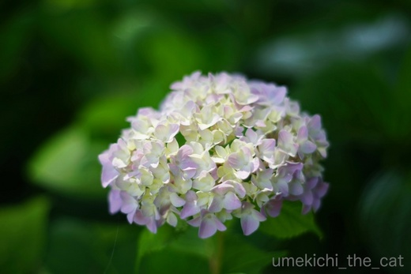
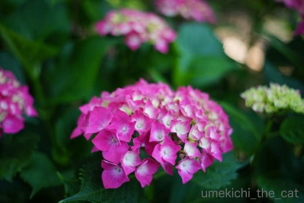
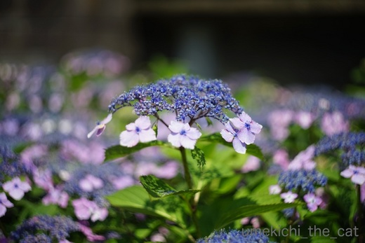
こちらは紫陽花まつりの初日。
見頃はあと１週間あるかな、って感じでした。
植物園内の芙蓉＆ムクゲにもう蕾が付いていました。早いですねー。
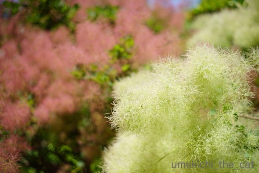
もわもわのスモークツリー。
梅吉が喜びそうですが遊ばせたら家中が悲惨な状態になること間違いなしですw

カフェオレ色の梅吉

梅吉 2023年8月10日 永眠


梅吉と出会った譲渡会

犬猫の理由なき殺処分ゼロ
妄想広告
UMEKICHI 光

爆発的に早い！
時々攻撃的！
Thanks to Mr.Boss365
爆発的に早い！
時々攻撃的！
Thanks to Mr.Boss365

めっちゃ、楽しそー♪
ザブン！と潜って、カシャカシャ！！チョイチョイ！！！
涼し気なブルーが、まるで夏の海のよう。
梅吉さん、波乗り気分でしょうかー(^^)/
我が家も、むか～しトンネルを買ったのだけれど、
コッテコテのヒョウ柄にしたもんだから、部屋の中が暑っ苦しくてねぇ。
黒猫たちは遊ばず、すぐにお蔵入りとなりました。いま、何処？？ｗ
ところでポイントは、たまると焼き肉「〇角」に直行！
1ポイント残らず、お腹の中に沈めてしまします(^^
by morichan (2018-06-04 14:33)
最初のお写真梅吉さんが波のチューブの中にいるみたい。下にサーフボードをおいたらバッチリですね。個人的には横穴から出てるおちりの写真がが好みです~。
ポイントは普通の買い物を引いてもらいます。このような猫用品を買う度にあっという間に破壊されてもう買う気にならんのです。
by zombiekong (2018-06-04 14:35)
梅吉さん、海の中にいるようです。
横穴からの〜ぉ、尾っぽも、お顔をもGOODです。
ちぃさんは、梅吉さんの好みを考えてトンネルは良いチョイスしましたね〜
by kiki (2018-06-04 14:53)
梅吉くん、めっちゃ楽しそう。肌触りも音もいい感じなのね。
梅吉くんが入り浸っているのなら、私も入ってみたい！！ｗ
1枚目の写真。ホント！チューブにも見えるし。涼し気で幻想的！！
ホント素敵な写真～♪部屋に飾りたいよ～。
モデルとカメラマンの息もぴったり(≧▽≦)
私もこんな写真が撮れるようになりたいな。
by emi (2018-06-04 15:30)
激しい動き♪ 楽しそうな様子が伝わってきます(#^.^#)
横穴から見えるおちりもお顔も最高！！
良い買い物でしたねぇ～！！
梅吉さん大喜び！！
そんなに喜んでくれるとこちらも嬉しくなりますね♪
by きぃ (2018-06-04 15:34)
こんにちは。
お礼の連絡遅れまして・・・座布団10枚！！有難うございます。
本日、 middrinnさんより座布団6枚頂き！！梅吉君以上の至福の歓喜です？
略儀ではございますが、まずはコメントにてお礼申し上げます！！(=^･ｪ･^=)
by Boss365 (2018-06-04 15:58)
わあ、梅吉さん、ミステリーゾーンに突入！みたい？
躊躇なしの漢、いいですね＾＾
牙見せてはしゃいでる～～横穴からも♪
こんなに喜んでくれたら甲斐がありましたね！
ポイント、最近は何が必需品かよく考えます＾＾
いぜんは猫のお試しのもの、よく買ってました＾＾
by sana (2018-06-04 18:10)
梅吉さん、楽しそうですね(^^)
でも、壊れるほど遊んでもらったら本望ですよね!
ズバッと突っ込んでいく梅吉さんの姿が目に浮かびます。
by kou (2018-06-04 18:16)
梅吉さん、キャットトンネルに大喜びしていますね！
躊躇無く飛び込んで行ったのですね(^^)
by ma2ma2 (2018-06-04 18:40)
既に書かれちゃいましたが1枚目は一瞬サーフィンしてるのかと(￣◇￣;)
マーヤ様があかり様で、その手のコラ画像は既にやってそうかな(^_^;)
破れて使えなくなった頃に再びポイントも貯まり、梅吉様への新グッズを
買うことになるに500カノッサ(^o^)丿 梅吉様が飽きちゃう方が早かった
りして(^_^;) スモークツリー、いいですねぇ(〃'∇'〃) 欲しいな(^_^;)
by middrinn (2018-06-04 20:03)
涼しげなブルーのトンネルで猫じゃらしとの暑い戦い(*^▽^*)
梅吉さんメッチャ楽しそう♪ いいお買い物でしたね！
トンネルに飛び込んだ時のオチリとか、穴から飛び出す猫パンチとか、猫変態の心をくすぐる場面がいっぱいでしょうね(^▽^;)
猫本付録のトンネルがボロボロになってきたので、ウチも買おうかな～。
ポイントはウチもほぼすべてこてつのオモチャに使ってます。
ものすごく飽きっぽい猫なので・・・(-_-メ)
by ゆきち (2018-06-04 20:35)
楽しそう♪ ^^)
by yes_hama (2018-06-04 21:31)
梅吉さーーーーーーん。
何故かそう叫びたい(^^;
楽しそうで何よりです(^^)
写真も素敵です(^^)
by riverwalk (2018-06-04 23:11)
うちでも子供の頃から唯一飽きずに遊ぶのがトンネルです。
今あるのは3代目。
１つは興奮しすぎちゃったせいか、
中でチッチしてしまい…(*_*)
もう１つは爪でボロボロになり繊維を食べちゃったら大変！という状態で
どちらも処分。
座布団で真ん中を持ち上げたり
端を持ち上げてちょっと傾斜をつけても喜びます！(^^)
by も〜 (2018-06-04 23:35)
梅吉さんもトンネルの魅力に
飲み込まれちゃったタイプですね( ´艸｀)
うちも、ビニール製のは爪の穴が開いています＾＾；
とっても涼し気なブルーで、カフェオレ色との相性、
バッチリです＾＾♪
楽しそうなニャンコを見ていると、
こちらも楽しくなりますね(≧▽≦)
by マーヤ (2018-06-05 00:57)
こんなに楽しく遊んでくれるのなら
うちもトンネル導入を考えないと。
しかし、みんなで入ったら渋滞する？＾＾；
by ぽちの輔 (2018-06-05 06:27)
梅吉さん、楽しそう♪( ´▽｀)
お父さん、お母さんが梅吉さん用に用意してくれるものは
どれも楽しいものばかりですもんねぇ=(^.^)=
警戒する必要ないですよね( ^ω^ )
トンネル、前にモンプチシール集めてもらいましたが、
うちのボーイズには穴が小さかったみたいですw
by ニッキー (2018-06-05 07:57)
トンネル、こんなに好きなんやー(^｡^)
やっぱりこれからもポイント貯まったら
猫グッズになるよねー(^_^;)
by よーちゃん (2018-06-05 08:18)
おはようございます。
二度目の訪問ですが、梅吉君のサーフィン動画期待してしまいますね！！（⌒ー⌒）
タイトルは、「ビッグ・ウェンズデー・梅吉！！」です！！
挿入歌は当然ビーチ・ボーイズ・梅吉かにゃ！？by すもも(=^･ｪ･^=)
by Boss365 (2018-06-05 09:41)
このトンネルの色、梅吉君にすごく合ってる^^
涼しげで良いよね。ちぃさんのおうちにもピッタリだろうなーって
思ってニヤニヤしてます^^
Yahoo!のポイントやTポイントは、やっぱり猫グッズに消えてるなｗ
トイレシート買うときにガッツリ割り引きとかｗｗｗ
by リュカ (2018-06-05 10:20)
梅吉さん、大ハッスルですな！
穴から出てるお尻が可愛いわあ＾＾
by じゅらまろ (2018-06-05 11:33)
可愛いだけじゃなく、色とか写真としてとっても綺麗っ♪
by yuppie (2018-06-05 13:36)
morichanさん＞
ヒョウ柄は個人的にはとっても好きですが
（ヒョウの顔柄じゃないよーw)
黒猫さんがインするとナイトサファリもかくやという感じに
なっちゃうかもしれませんねー。
ポポくんソフィーさんどこー！？みたいな( ´艸｀)
で、お母さん僕のあのトンネルどうしたんでせうね・・・
ポイントをお腹に沈めちゃうとは素敵です！！
ポイントも血となり肉となる(^_－)☆
zombiekongさん＞
海とサーフボードを連想された方がたくさんでしたー。
ちょっと蒸し暑くなって来たこの頃一服の清涼剤になったでしょうか＾＾
横穴おちりの写真は顔が写っていないけれど外せない、と思いました。
だって、梅吉おちりですら楽しそうなんですものー(*>艸<)
おもちゃにあきる、なら次への闘志が湧いて来ますが
壊されると辛いですねーwww
スットコランドのみなにゃんはそれぞれがそれぞれをおもちゃに
遊んでいただきましょう！
kikiさん＞
あおーい海が南の島って感じですよねー。
梅吉も旅気分を楽しんでくれたかしら＾＾
私も横穴おちり＆しっぽ写真がお気に入りです！！
楽しさをおちりでよく表現してくれたものだ、と思いましたよー(๑˃̵ᴗ˂̵)و
emiさん＞
レジ袋もそうだけど「しゃかしゃか」音にテンション上がるのよねー。
遊んでトンネルが音を立てるとどんどん楽しくなってく感じ＾＾
おっとがトンネルに顔を突っ込んで使用感を確かめてましたよ( ´艸｀)
うっすら周りが見えるシースルーな感じが良いそうですwww
emiさんも確かめてみる？？みる？？？(≧з≦)
写真褒めてくれてありがとう！
やっぱり私はお花より梅吉の写真だわヾ(*ΦωΦ)ﾉ
emiさんのお写真は小物の使い方が素敵です♡♡♡
きぃさん＞
横穴写真、すっごく楽しそうな様子をお伝えできたでしょうか＾＾
ものすごーくハッスル（笑）していたので大量のボツ写真の中から
使えそうなのを選んでみました。
喜びそうなじゃらしはあらかた試したので（そして飽きたw）
この時期のトンネル投入は良いタイミングでしたよー。
Boss365さん＞
middrinn座布団貯まっていそうですね！
座布団ポイント交換とか！？ ( ´艸｀)
梅吉サーフィン動画のBGMにはニッポンの夏ソング
タツローの曲も（TUBEではないw）使いたいと申しておりますw
ああ、大きな波がやってくるよ・・・
sanaさん＞
恐れを知らぬ躊躇無しの漢は無邪気で可愛い、でもあるのですけど
向こう見ずすぎて慌てることも(^▽^;)
でもおもちゃに関してはうれしいです！
やっぱり猫用品買っちゃいますよね( ´艸｀)
kouさん＞
そうそう＾＾
「なんやそれ？」って冷たくされるより良いですよね！
梅吉のはしゃぎっぷり、想像していただけましたか＾＾
ma2ma2さん＞
開封するのも待ち切れない、って感じでしたー。
何が出てくるのか知らないくせに好奇心だけは旺盛で(｡-_-｡)
middrinnさん＞
あかりちゃんは色んなことにトライしていますからね(^_－)☆
ああっ！次なるポイント利用法が見透かされているー！！
ポイント利用、middrinnさんには愚問ですよねー。
活用して良品・美品が手に入りますように＾＾
ゆきちさん＞
横穴おちりを褒めてくださる方のなんと多いことでしょう(〃▽〃)
みなさん猫変態なのね♡と心強く、嬉しい限りです＾＾
あらかたの猫おもちゃは試してそして飽きて・・・の
このタイミングで購入して本当に良かったです！
もっと早く買えば良かったではなく今がベストのタイミングかと(๑˃̵ᴗ˂̵)و
ポイントは、
倍増デー等を利用してどんどん猫グッズにつぎ込んじゃいましょうかw
by ちぃ (2018-06-05 17:29)
私もトンネル、抜けた〜〜い！
がぶっ！^ ^
by KENT0mg (2018-06-05 18:41)
この前貯めたポイントでエサ買いました。猫のものとは言えちょっと現実的かしら？(^-^;
by palpal (2018-06-05 20:42)
yes_hamaさん＞
とっても楽しそうに遊んでくれましたよー。
最初ほどのテンションはなくなりなしたが
今日も楽しく遊んでくれました♪
riverwalkさん＞
楽しそうで良いですねーーーーーって
叫んでくださいっ＾＾
写真お誉めいただいてありがとうございます。
やっぱり私は梅吉写真家が似合っているようです(｡-_-｡)
も〜さん＞
３代目！王子の歴史とともに、でしょうか＾＾
（痛くないように）座布団で変化をつけるのですね！
やってみま〜す！！
異様に喜びそうな気がしますよ( ´艸｀)
マーヤさん＞
名実ともに飲み込まれた、まさにそんな感じですー！！
穴開けちゃうのは梅吉だけじゃないのですね。ちょっと安心w
小さい穴だったらテープで付けとけばいいやって思ってますwww
ぽちの輔さん＞
渋滞してぎゅうぎゅうになっているの見たいです！！
猫串団子！？(*>艸<)
ニッキーさん＞
梅吉が警戒も躊躇もしないのは信頼の証！？
わ〜気づきませんでした。責任重大ですwww
小さい穴に無理やり入ろうとジダバタする？
あるいは入る前からとっくに諦めてトンネルを見つめるのみ？の
大御所様とニケさんを想像してニヤニヤしちゃいました( ´艸｀)
よーちゃん＞
わー、読まれてます〜(〃▽〃)
元気に遊んでくれているうちはポイント利用の
おもちゃジプシーは続いて行きそうですwww
リュカさん＞
もう一色はピンク。
梅吉はどう見てもブルーだよね、と即決でした＾＾
写真に撮ってキレイに色が出たのは
想定外の特典でしたよ＾＾
うちにもなじんでますよーＯ(≧▽≦)Ｏ
やっぱり猫グッズ買っちゃうよねー。
次のポイント利用もきっとそうwww
じゅらまろさん＞
そうなの！大ハッスル＾＾
フィーバーとも言う(*>艸<)
ああ、やっぱりじゅらまろさんも
おちりに惹きつけられる猫変態♡
yuppieさん＞
お誉めいただいてありがとうございます＾＾
ブルーの写真写りが思った以上に良くって嬉しいです♪
修正しがいもあってちょっと遊んじゃいましたwww
KENT0mgさん＞
お元気でしたかー＾＾
いま通過中のトンネルがこのトンネルのように
明るい光に満ちていますように！！
palpalさん＞
いえいえ、堅実が一番です(^_－)☆
偏食さんがいるといろいろ試して見なくちゃいけないしね＾＾
by ちぃ (2018-06-05 21:48)
梅吉さんが喜んでくれるなら次々と
ポイント投入してしまうお気持ち、
わかる気がします♡アングルがバッチリ
決まったお写真も良いですネ。
花菖蒲も紫陽花も微妙な色の違いが
綺麗だし、梅雨時も意外に楽しい？！
by うりくま (2018-06-05 23:55)
うりくまさん＞
見向きもしないおもちゃもよくあります(^▽^;)
だからこそ「ポイント利用したんだからいいっか〜」と
多少なりとも言い訳になるのが良いのかもw
梅雨を迎えるのも今年で7度目。
嫌がってばかりいないで楽しみも見つけなくちゃねと
思っています。
でも湿気で髪が広がるのだけはどうしてもいやー(꒦ິ⌑꒦ີ)
by ちぃ (2018-06-06 17:52)
気に入ってもらえて、下僕冥利に尽きますね！(｡-_-｡)
菖蒲にあじさいに・・・とってもきれいです。
by Ja-Kou66 (2018-06-08 00:02)
Ja-Kou66さん＞
嬉しそうに遊んでくれると相手をしている方も嬉しくなって来て・・・
そんな気持ちが伝染して盛り上がってくれるのかもしれませんねー＾＾
菖蒲にあじさい写真・・・梅吉の「トンネル写真に持って行かれた」
と呟いていたおっとが喜びます！
ありがとうございます＾＾
by ちぃ (2018-06-08 15:34)